只读演示原型 · 2026-11-14 · 数据全部来自本机文件，离线可打开 · 以 V4 为准，五台为 2000/2001/2002/2003/2005、没有 2004 · 执行科研配色规格 V1
FIGURE_COLOR_SPEC_V12026-11-14 用户指示「里面出的图片要使用科研配色方案……记录这条规格，并严格执行」。色值逐字取自用户提供的三张参考图，已登记在 05_CONFIG/figure_palette.json；规格全文见 05_CONFIG/FIGURE_COLOR_SPEC.md。本页所有颜色均从加载器 figure_palette.py 取得，并由 check_figure_colors.py 校验色板外颜色为 0。方案 C 为默认分组色板（G1—G6 顺序固定），方案 A 用于折线与强调，方案 B 用于浅底与置信带。
原始资料不适用本规格：下方 11 张潮汐 PNG 是资料截图，保持原样未改色、未重绘。缺测一律留白标 NA，不使用零值色代替。
来源：Open-Meteo 数值气象模型，网格 27.87346°N / 121.11486°E，北京时间，10 m 高度。原表自述「历史时段也不是现场实测」，且含 120 条未来预报，不能作为实测风速用于论文关联分析。此处仅作资料形态展示。折线三色取自方案 A，且以深蓝→珊瑚红→灰蓝紫的对比度递减表达可信度递减，不单靠颜色区分（图例另有文字）。
规范要求「不得虚构观测数据」「缺测显示 NA，不显示为零」，因此这里保持空白而非填充示例值。这正是「有网页 ≠ 有分析结果」的直观例子：文件已经躺在磁盘上，但没有解析引擎，页面依然画不出一条真实活动曲线。
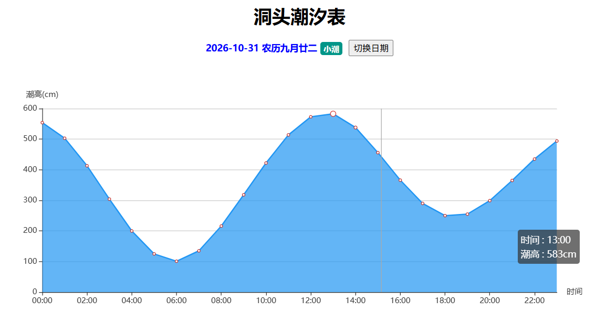
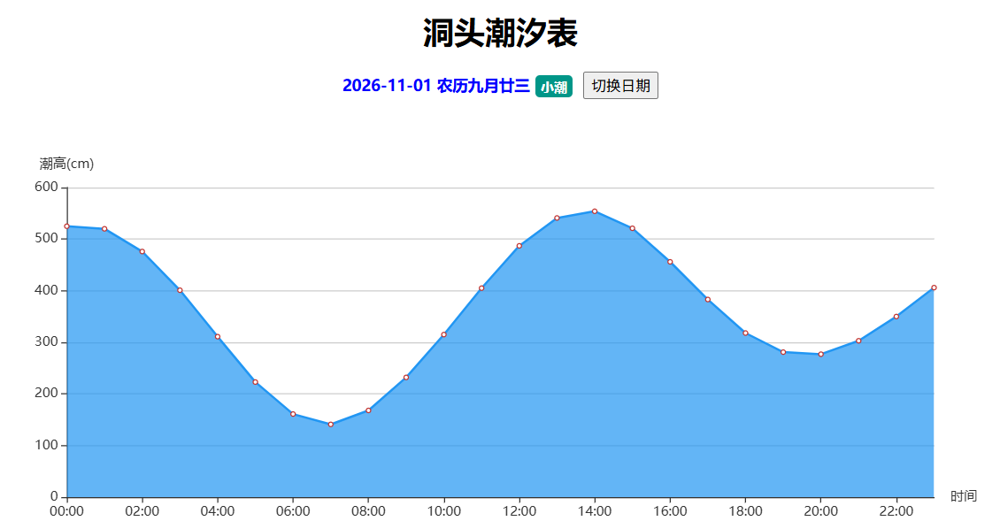
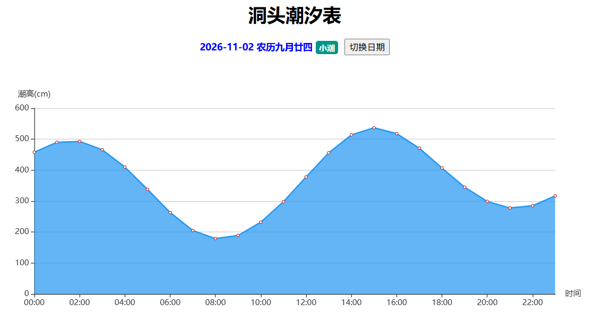
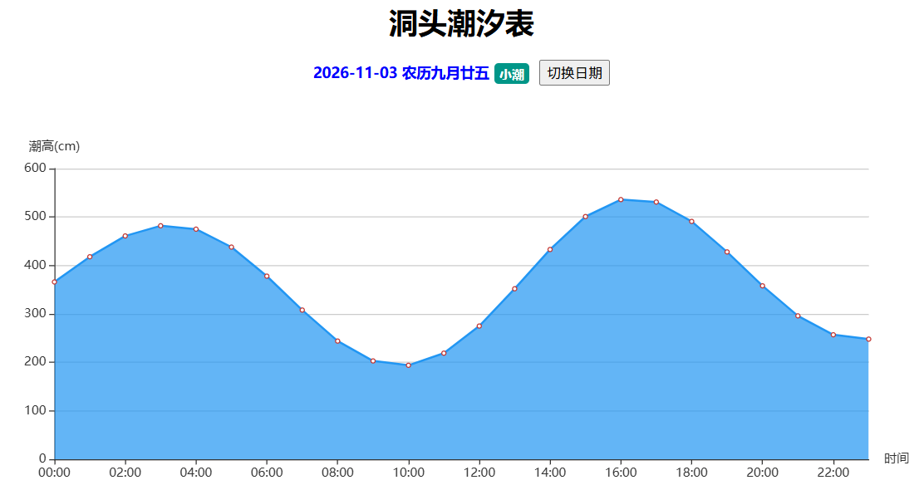
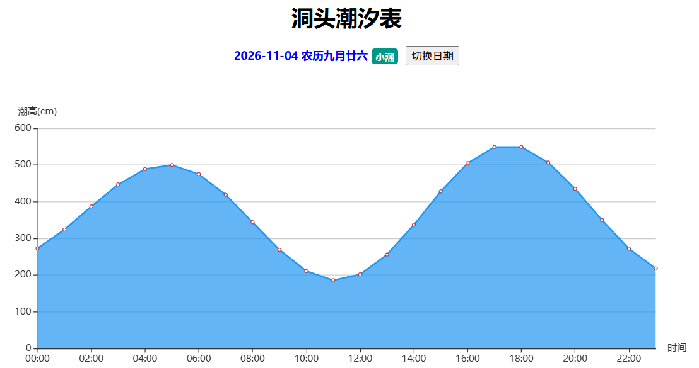
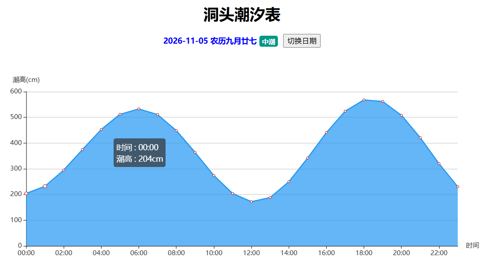
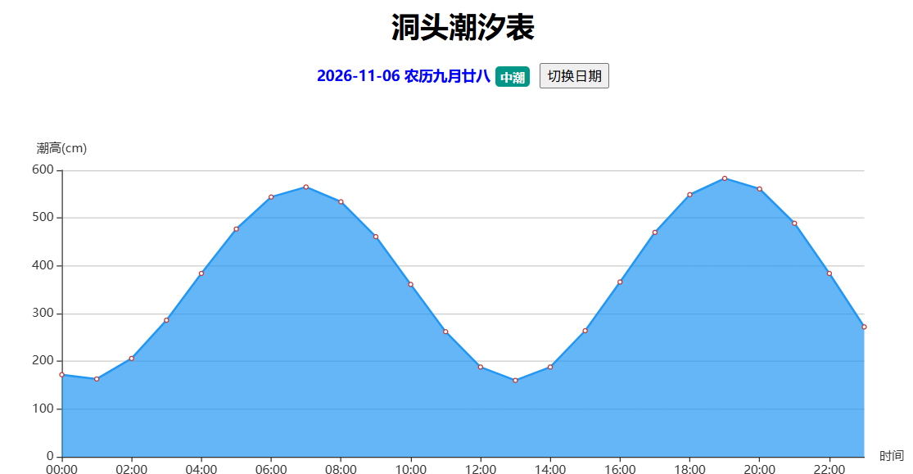
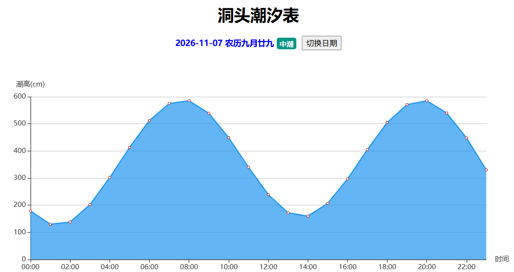
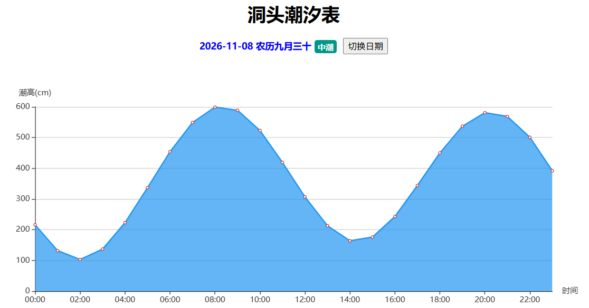
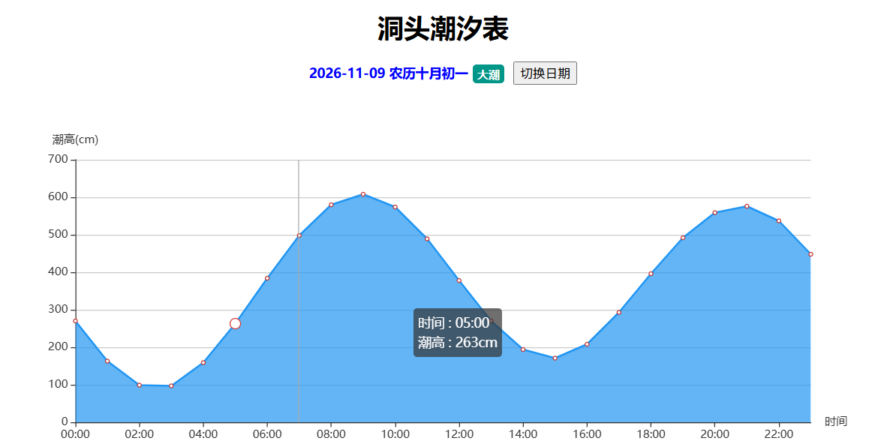
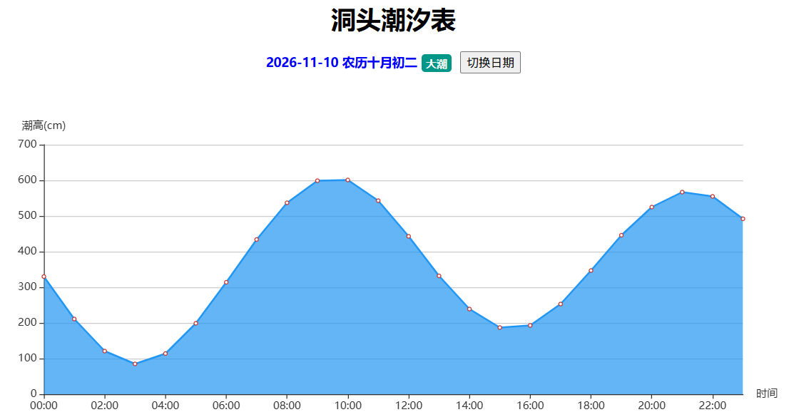
纵轴为潮高 cm，但潮位基准面、站点、时区、实测/预报属性均缺失，且没有逐时数值表。规范与开发总规划明确禁止图像估读产生超出图片分辨率的伪精确值，故本页未做任何数字化。
| 阶段 | 任务 | 当前状态 |
|---|---|---|
| S00 | 项目检查、目录建立和备份 | 目录与资料已备；21 个 CSV 已按设备归档并预检；以 V4 为准已裁定；Git 初始回滚点已建、Python 3.10 待 S00 安装；阶段报告未做 |
| S01 | 数据库、五台设备、独立参数 | 未开始 |
| S02 | 真实 CSV 解析与质量审计 | 未开始 · 21 个 CSV 为第一阶段双站完整导出、已归档；归档不等于导入；解析器须支持持续增量上传 |
| S03 | 每日统计、增量上传、缺测 | 未开始 |
| S04 | 任意时间 / 天数 / 设备比较 | 未开始 |
| S05 | 环境数据接入与联合分析 | 仅风速与潮汐资料预检，未入库 |
| S06 | 日内、昼夜和晨昏 | 未开始 |
| S07 | 深度、底界、三水层、长期规律 | 未开始 · 出图须执行科研配色规格 |
| S08 | 五站 GPS 空间与动态分析 | 未开始 · GPS 坐标未提供 |
| S09 | OriginPro、16 类图、动态文件 | 未开始 · OriginPro 未安装；出图须执行科研配色规格 |
| S10 | Flask 完整科研工作台（网页） | 未开始 · 本页不是该工作台；图表须执行科研配色规格 |
| S11 | 最终系统与预答辩验收 | 未开始 |
| 级别 | 缺口 | 影响 |
|---|---|---|
| G1 | 双站同期窗口 10-31—11-07 须按真实时间戳复核；2001 到 11-07 结束、不会补传 | 影响 S07 冻结与论文第三章 |
| G1 | Python 3.10 已获安装授权，待 S00 安装并建 .venv | S00 前置动作 |
| G1 | Git 初始回滚点已建立；S00 须核验复用并另建阶段回滚点 | S00 前置动作 |
| G2 | 21 个 CSV 分属两套编码/换行/时间格式，须逐文件探测 | S02 解析器硬约束 |
| G2 | 五台安装参数、五站 GPS 坐标；2002/2003/2005 数据后续上传 | 阻断 S01 / S08 五站部分 |
| G2 | 水温数值资料、潮汐逐时数值表与基准面、实测风速 | 阻断 S05 |
| G2 | 厂家资料（量程、采样机制、量纲、近场盲区） | 阻断候选回波指标 |
| G3 | 双站 / 五站实际起止时间与调试期时间线 | 阻断数据冻结与论文 |
| G4 | OriginPro 2026b 安装与 10 项 COM 实测 | 阻断 S09 |
| G5 | 31 类入口覆盖 29 项界面能力（非冲突）；PyCharm 版本差异待登记 | 范围缩减须正式变更 |